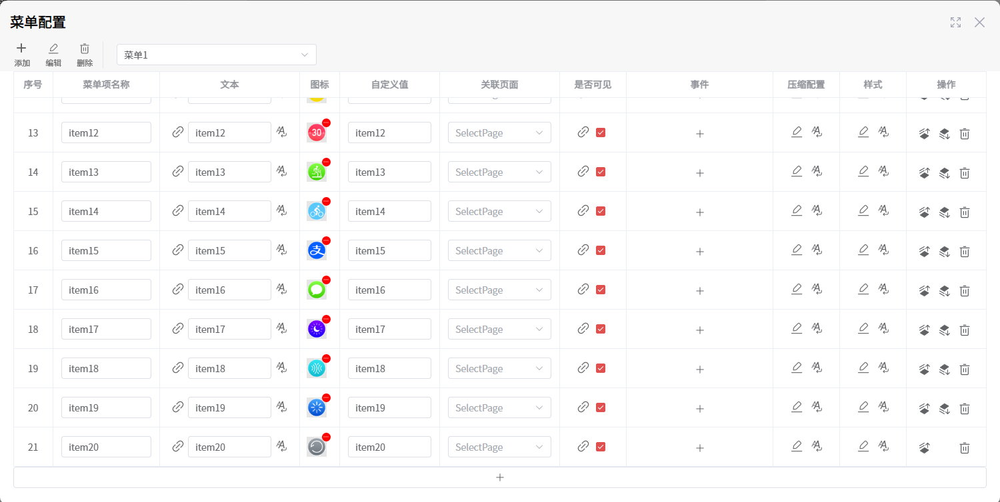
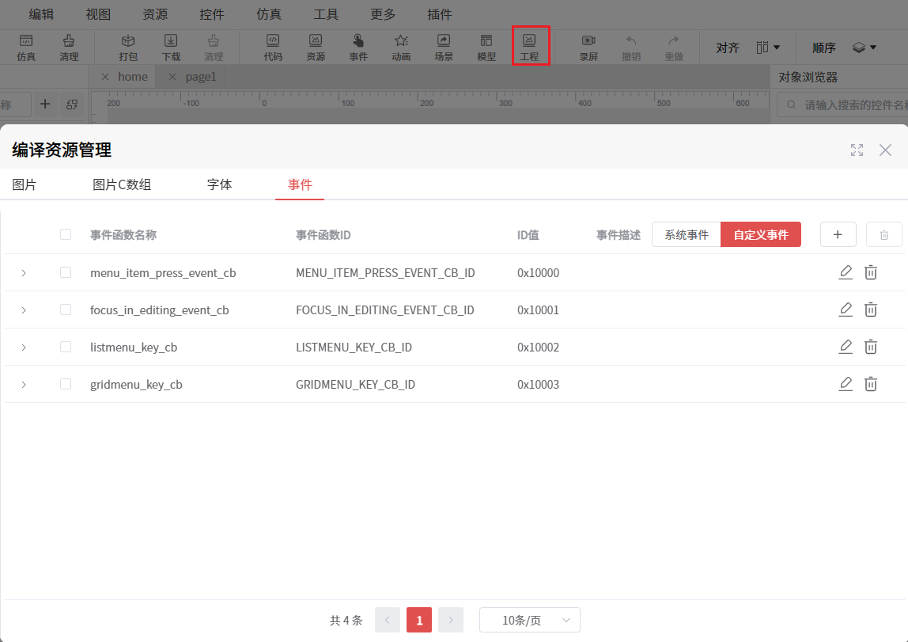
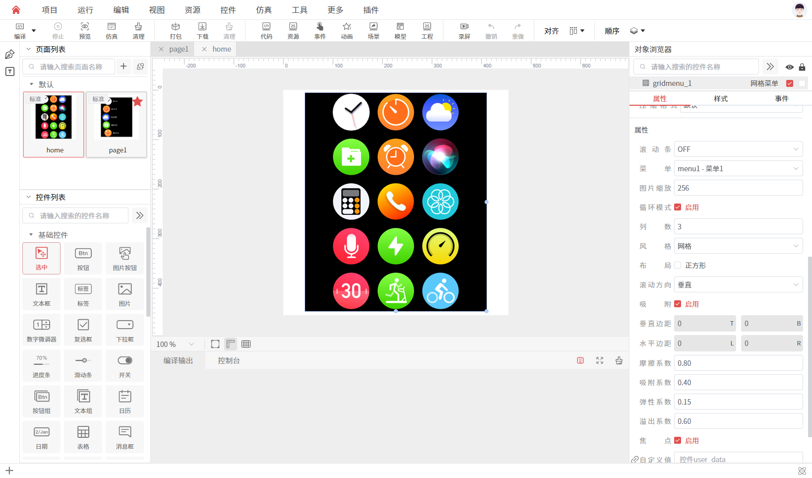
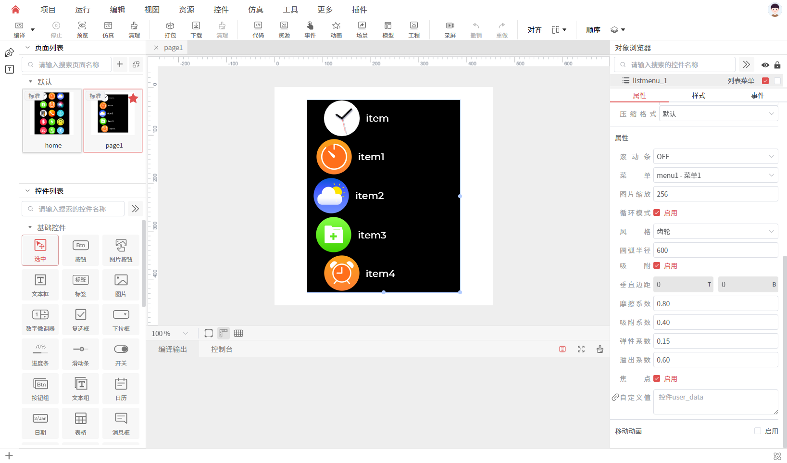
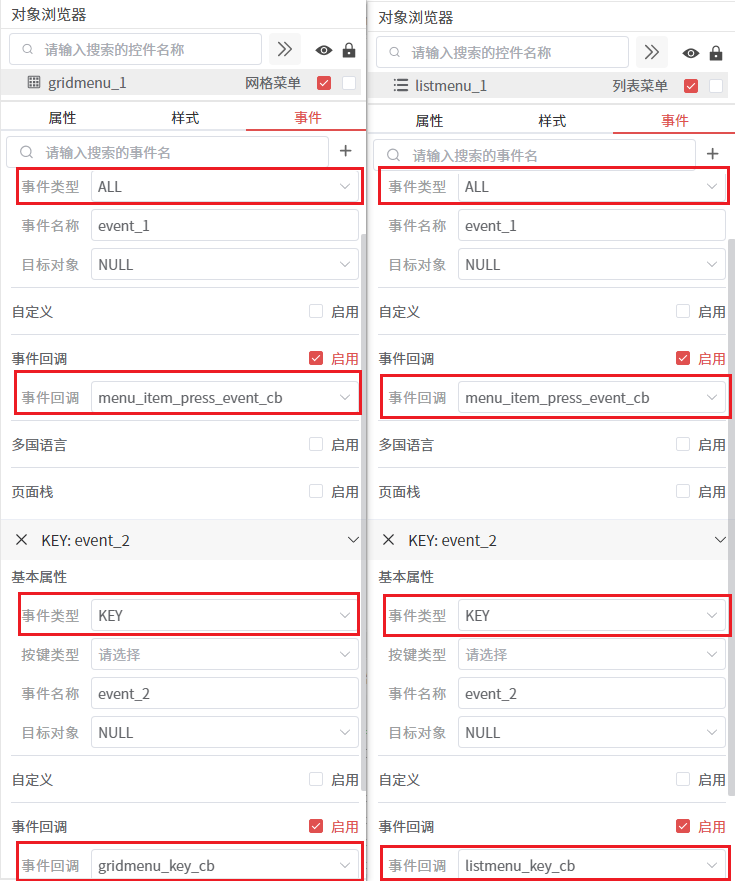
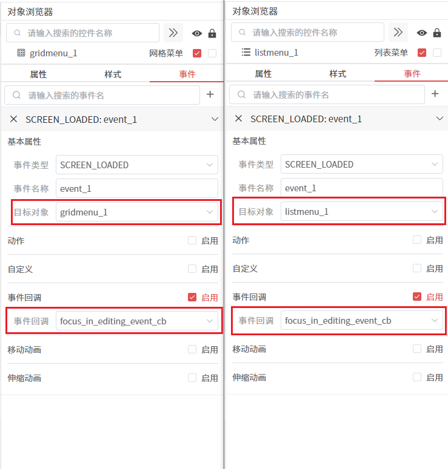
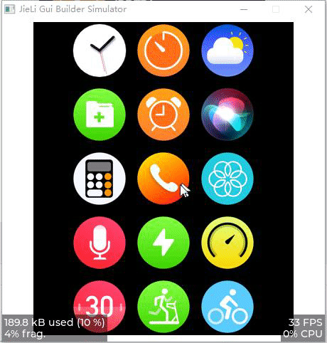
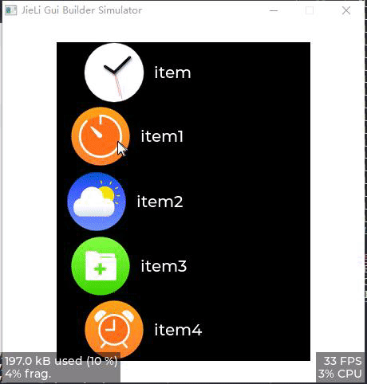

键盘和鼠标滚轮控制菜单滑动
使用
网格菜单和列表菜单实现菜单循环滚动，键盘方向键和鼠标滚轮控制菜单滑动，菜单项点击事件触发菜单项对应的事件。
菜单配置
参考 菜单 来配置这样一份菜单。

事件配置
在 工程 - 事件 上，点击 添加 按钮，填写事件信息，添加好下面这几个事件，之后会在custom/custom.c文件中实现这些事件的代码。
/**
* 菜单项点击事件
*/
void menu_item_press_event_cb(lv_event_t * e);
/**
* 在页面加载完成后，将焦点设置为当前对象，并进入编辑模式
*/
void focus_in_editing_event_cb(lv_event_t * e);
/**
* 列表菜单按键回调函数，根据列表菜单的滚动方向和按键/滚轮产生的事件进行不同的处理
*/
void listmenu_key_cb(lv_event_t * e);
/**
* 网格菜单按键回调函数，根据网格滚动方向和按键/滚轮产生的事件进行不同的处理
*/
void gridmenu_key_cb(lv_event_t * e);

创建控件
创建了
home和page1页面，分别添加了网格菜单和列表菜单控件。网格菜单和列表菜单按照如下方式配置控件属性


网格菜单绑定上menu_item_press_event_cb、gridmenu_key_cb事件。列表菜单绑定上menu_item_press_event_cb、listmenu_key_cb事件。

home和page1页面 绑定focus_in_editing_event_cb事件，让页面在加载完成后，将焦点设置为目标菜单对象，并进入编辑模式，方便键盘和鼠标滚轮能够正常触发、发送Key事件给目标菜单对象。

实现事件代码
在 custom/custom.c 文件中，实现上面配置的事件代码，具体实现如下：
static void listmenu_idle_timer_cb(lv_timer_t * t);
static void gridmenu_idle_timer_cb(lv_timer_t * t);
static void menu_item_click_cb(lv_obj_t * obj);
typedef struct {
uint32_t last_key;
uint32_t last_ts;
uint8_t speed_level;
} key_scroll_state_t;
static key_scroll_state_t s_listmenu_scroll_state; // 列表菜单滚动状态
static lv_timer_t * s_listmenu_idle_tmr = NULL; // 列表菜单空闲定时器
static key_scroll_state_t s_gridmenu_scroll_state; // 网格菜单滚动状态
static lv_timer_t * s_gridmenu_idle_tmr = NULL; // 网格菜单空闲定时器
#define GRIDMENU_IDLE_STOP_MS 200 // 按键/滚轮停止后，最多200ms内停住
#define LISTMENU_IDLE_STOP_MS 200
// 用于跟踪按下位置和滑动状态的静态变量
static lv_point_t press_point = {0, 0};
static bool is_dragging = false;
static lv_obj_t * pressed_btn = NULL;
#define DRAG_THRESHOLD 10 // 滑动阈值，超过这个距离认为是滑动而不是点击
#define LONG_PRESS_THRESHOLD 500 // 长按判定阈值（毫秒）
static uint32_t press_start_tick = 0;
static bool is_long_press = false;
void menu_item_press_event_cb(lv_event_t * e)
{
lv_event_code_t code = lv_event_get_code(e);
lv_obj_t * obj = lv_event_get_target(e);
lv_indev_t * indev = lv_indev_get_act();
if(!indev)
return;
switch(code) {
case LV_EVENT_PRESSED: {
// 记录按下时的位置
lv_indev_get_point(indev, &press_point);
is_dragging = false;
is_long_press = false;
press_start_tick = lv_tick_get();
pressed_btn = obj;
break;
}
case LV_EVENT_PRESSING: {
// 检查是否已经开始滑动
if(!is_dragging && pressed_btn == obj) {
lv_point_t current_point;
lv_indev_get_point(indev, ¤t_point);
// 计算滑动距离
int32_t dx = LV_ABS(current_point.x - press_point.x);
int32_t dy = LV_ABS(current_point.y - press_point.y);
// 如果滑动距离超过阈值，标记为滑动状态
if(dx > DRAG_THRESHOLD || dy > DRAG_THRESHOLD) {
is_dragging = true;
}
// 时间超过长按阈值则视为长按
if(!is_long_press &&
lv_tick_elaps(press_start_tick) >= LONG_PRESS_THRESHOLD) {
is_long_press = true;
}
}
break;
}
case LV_EVENT_LONG_PRESSED:
case LV_EVENT_LONG_PRESSED_REPEAT: {
// 内置的长按事件也标记为长按，阻止触发点击
if(pressed_btn == obj) {
is_long_press = true;
}
break;
}
case LV_EVENT_RELEASED: {
// 只有在没有滑动的情况下才触发点击事件
if(!is_dragging && !is_long_press && pressed_btn == obj) {
menu_item_click_cb(obj);
}
// 重置状态
is_dragging = false;
is_long_press = false;
pressed_btn = NULL;
break;
}
default:
break;
}
}
/**
* @brief 在页面加载完成后，将焦点设置为当前对象，并进入编辑模式
* @param e 事件指针
*/
void focus_in_editing_event_cb(lv_event_t * e)
{
lv_obj_t *obj = lv_event_get_target(e);
lv_group_t *group = lv_group_get_default();
if(!group) return;
if(lv_group_get_focused(group) != obj) {
lv_group_focus_obj(obj);
}
/* 让group处于编辑模式，这样鼠标滚轮滚动时，就会发送LV_EVENT_KEY事件给聚焦的控件了 */
lv_group_set_editing(group, true);
}
/**
* @brief
* 列表菜单按键回调函数，根据列表菜单的滚动方向和按键/滚轮产生的事件进行不同的处理
* @param e 事件指针
*/
void listmenu_key_cb(lv_event_t * e)
{
lv_obj_t * menu = lv_event_get_target(e);
uint32_t raw_key = lv_event_get_key(e);
uint8_t from_encoder = 0;
uint32_t key = raw_key;
LV_LOG_WARN("listmenu_key_cb: raw_key = %d, key = %d", raw_key, key);
/* 将编码器的左右旋转键映射为上下滚动，并标记来自编码器 */
if(raw_key == LV_KEY_LEFT) {
key = LV_KEY_UP;
from_encoder = 1;
}
else if(raw_key == LV_KEY_RIGHT) {
key = LV_KEY_DOWN;
from_encoder = 1;
}
if(key != LV_KEY_UP && key != LV_KEY_DOWN) {
return;
}
uint32_t now = lv_tick_get();
uint32_t elapsed = now - s_listmenu_scroll_state.last_ts;
const uint32_t accel_threshold = 300;
if(key == s_listmenu_scroll_state.last_key && elapsed < accel_threshold) {
if(s_listmenu_scroll_state.speed_level < 3) {
s_listmenu_scroll_state.speed_level++;
}
}
else {
s_listmenu_scroll_state.speed_level = 0;
}
s_listmenu_scroll_state.last_key = key;
s_listmenu_scroll_state.last_ts = now;
lv_coord_t pad_row = lv_obj_get_style_pad_row(menu, LV_PART_MAIN);
/* 获取首个可见项高度 */
lv_coord_t item_h = 0;
uint32_t child_cnt = lv_obj_get_child_cnt(menu);
for(uint32_t i = 0; i < child_cnt; i++) {
lv_obj_t * child = lv_obj_get_child(menu, i);
if(lv_obj_has_flag(child, LV_OBJ_FLAG_HIDDEN))
continue;
item_h = lv_obj_get_height(child);
break;
}
if(item_h == 0)
return;
/* 键盘方向键固定一步，编码器按加速倍数 */
int32_t step_mul =
from_encoder ? (1 << s_listmenu_scroll_state.speed_level) : 1;
/* 直接对齐到最近中心并步进到下一个中心，随后交给内部动画 */
lv_coord_t row_h = item_h + pad_row;
lv_coord_t center_y = lv_obj_get_height(menu) / 2;
lv_coord_t cur_offset = lv_listmenu_get_scroll_offset(menu);
/* 计算当前对齐到哪一行（使用四舍五入） */
int32_t num = (int32_t)center_y - (int32_t)cur_offset - (int32_t)(item_h / 2);
int32_t k_cur =
(num >= 0) ? (num + row_h / 2) / row_h : (num - row_h / 2) / row_h;
/* 计算目标行 */
int32_t k_tar = (key == LV_KEY_UP) ? (k_cur + step_mul) : (k_cur - step_mul);
/* 计算目标偏移量 */
lv_coord_t target_offset = center_y - (k_tar * row_h + item_h / 2);
/* 选择速度 */
static const uint32_t speed_table[] = {300, 350, 400, 500};
uint32_t speed_idx = s_listmenu_scroll_state.speed_level;
if(speed_idx >= (sizeof(speed_table) / sizeof(speed_table[0]))) {
speed_idx = (sizeof(speed_table) / sizeof(speed_table[0])) - 1;
}
uint32_t speed = speed_table[speed_idx];
lv_listmenu_set_scroll_offset(menu, target_offset, true, speed);
s_listmenu_scroll_state.last_ts = lv_tick_get();
if(s_listmenu_idle_tmr == NULL) {
s_listmenu_idle_tmr =
lv_timer_create(listmenu_idle_timer_cb, LISTMENU_IDLE_STOP_MS, menu);
}
else {
s_listmenu_idle_tmr->user_data = menu;
lv_timer_reset(s_listmenu_idle_tmr);
lv_timer_resume(s_listmenu_idle_tmr);
}
}
/**
* @brief 列表菜单空闲定时器回调函数
* 在一段时间不再收到按键/滚轮后，立即停止滚动并吸附
* @param t 定时器对象指针
*/
static void listmenu_idle_timer_cb(lv_timer_t * t)
{
lv_obj_t * menu = (lv_obj_t *)t->user_data;
uint32_t now = lv_tick_get();
if(now - s_listmenu_scroll_state.last_ts >= LISTMENU_IDLE_STOP_MS) {
lv_listmenu_stop_scroll(menu, true, 300);
lv_timer_pause(t);
}
}
/**
* @brief
* 网格菜单按键回调函数，根据网格菜单的滚动方向和按键/滚轮产生的事件进行不同的处理
* @param e 事件指针
*/
void gridmenu_key_cb(lv_event_t * e)
{
lv_obj_t * menu = lv_event_get_target(e);
uint32_t raw_key = lv_event_get_key(e);
uint8_t from_encoder = 0;
uint32_t key = raw_key;
lv_dir_t dir = lv_gridmenu_get_scroll_dir(menu);
/* 针对垂直网格：将编码器的左右映射为上下；针对水平网格：接受滚轮产生的
* UP/DOWN 并映射为 LEFT/RIGHT */
if((dir & LV_DIR_VER) && !(dir & LV_DIR_HOR)) {
if(raw_key == LV_KEY_LEFT) {
key = LV_KEY_UP;
from_encoder = 1;
}
else if(raw_key == LV_KEY_RIGHT) {
key = LV_KEY_DOWN;
from_encoder = 1;
}
if(key != LV_KEY_UP && key != LV_KEY_DOWN)
return;
}
else if((dir & LV_DIR_HOR) && !(dir & LV_DIR_VER)) {
if(key == LV_KEY_UP)
key = LV_KEY_LEFT; /* 将滚轮上映射为向左 */
else if(key == LV_KEY_DOWN)
key = LV_KEY_RIGHT; /* 将滚轮下映射为向右 */
if(key != LV_KEY_LEFT && key != LV_KEY_RIGHT)
return;
if(raw_key == LV_KEY_LEFT || raw_key == LV_KEY_RIGHT)
from_encoder = 1;
}
else {
/* 未明确的滚动方向，不处理 */
return;
}
uint32_t now = lv_tick_get();
uint32_t elapsed = now - s_gridmenu_scroll_state.last_ts;
const uint32_t accel_threshold = 300;
if(key == s_gridmenu_scroll_state.last_key && elapsed < accel_threshold) {
if(s_gridmenu_scroll_state.speed_level < 3)
s_gridmenu_scroll_state.speed_level++;
}
else {
s_gridmenu_scroll_state.speed_level = 0;
}
s_gridmenu_scroll_state.last_key = key;
s_gridmenu_scroll_state.last_ts = now;
/* 直接基于行高/列宽进行偏移步进，避免依赖“可见项索引” */
bool hex = lv_gridmenu_is_hex_layout(menu);
lv_coord_t pad_row = lv_obj_get_style_pad_row(menu, LV_PART_ITEMS);
lv_coord_t pad_col = lv_obj_get_style_pad_column(menu, LV_PART_ITEMS);
/* 获取首个可见项尺寸 */
lv_coord_t item_w = 0, item_h = 0;
uint32_t child_cnt = lv_obj_get_child_cnt(menu);
for(uint32_t i = 0; i < child_cnt; i++) {
lv_obj_t * child = lv_obj_get_child(menu, i);
if(lv_obj_has_flag(child, LV_OBJ_FLAG_HIDDEN))
continue;
item_w = lv_obj_get_width(child);
item_h = lv_obj_get_height(child);
break;
}
if(item_w == 0 || item_h == 0)
return;
/* 键盘方向键固定一步，编码器按加速倍数 */
int32_t step_mul =
from_encoder ? (1 << s_gridmenu_scroll_state.speed_level) : 1;
/* 直接对齐到最近中心并步进到下一个中心，随后交给内部动画） */
lv_point_t off = {
.x = lv_gridmenu_get_scroll_hor_offset(menu),
.y = lv_gridmenu_get_scroll_ver_offset(menu),
};
if((dir & LV_DIR_VER) && !(dir & LV_DIR_HOR)) {
lv_coord_t row_h = hex ? (lv_coord_t)(item_h - 0.14f * item_w + pad_row)
: (lv_coord_t)(item_h + pad_row);
lv_coord_t center_y = lv_obj_get_height(menu) / 2;
int32_t num = (int32_t)center_y - (int32_t)off.y - (int32_t)(item_h / 2);
int32_t k_cur = (num >= 0) ? (num + row_h / 2) / row_h
: (num - row_h / 2) / row_h; /* round */
int32_t k_tar =
(key == LV_KEY_UP) ? (k_cur + step_mul) : (k_cur - step_mul);
off.y = center_y - (k_tar * row_h + item_h / 2);
}
else if((dir & LV_DIR_HOR) && !(dir & LV_DIR_VER)) {
lv_coord_t col_w = item_w + pad_col;
lv_coord_t center_x = lv_obj_get_width(menu) / 2;
int32_t num = (int32_t)center_x - (int32_t)off.x - (int32_t)(item_w / 2);
int32_t k_cur = (num >= 0) ? (num + col_w / 2) / col_w
: (num - col_w / 2) / col_w; /* round */
int32_t k_tar =
(key == LV_KEY_LEFT) ? (k_cur + step_mul) : (k_cur - step_mul);
off.x = center_x - (k_tar * col_w + item_w / 2);
}
else {
return;
}
static const uint32_t speed_table[] = {300, 350, 400, 500}; /* px/s */
uint32_t idx = s_gridmenu_scroll_state.speed_level;
if(idx >= (sizeof(speed_table) / sizeof(speed_table[0])))
idx = (sizeof(speed_table) / sizeof(speed_table[0])) - 1;
uint32_t speed = speed_table[idx];
lv_gridmenu_set_scroll_offset(menu, off, true, speed);
/* 触发/续期“空闲停止”定时器：在一段时间不再收到按键/滚轮后，立即停止滚动并吸附
*/
s_gridmenu_scroll_state.last_ts = lv_tick_get();
if(s_gridmenu_idle_tmr == NULL) {
s_gridmenu_idle_tmr =
lv_timer_create(gridmenu_idle_timer_cb, GRIDMENU_IDLE_STOP_MS, menu);
}
else {
s_gridmenu_idle_tmr->user_data = menu;
lv_timer_reset(s_gridmenu_idle_tmr);
lv_timer_resume(s_gridmenu_idle_tmr);
}
}
/**
* @brief 网格菜单空闲定时器回调函数
* 在一段时间不再收到按键/滚轮后，立即停止滚动并吸附
* @param t 定时器对象指针
*/
static void gridmenu_idle_timer_cb(lv_timer_t * t)
{
lv_obj_t * menu = (lv_obj_t *)t->user_data;
uint32_t now = lv_tick_get();
if(now - s_gridmenu_scroll_state.last_ts >= GRIDMENU_IDLE_STOP_MS) {
/* 停止滚动并就地吸附，模拟“旋钮松手即停” */
lv_gridmenu_stop_scroll(menu, true, 300);
lv_timer_pause(t);
}
}
/**
* @brief 菜单项点击事件回调函数，根据菜单项的user_data进行不同的处理
* @param obj 菜单项对象
*/
static void menu_item_click_cb(lv_obj_t * obj)
{
char * user_data = (char *)lv_obj_get_user_data(obj);
if(user_data == NULL) {
LV_LOG_WARN("user_data is NULL");
return;
}
if(strcmp(user_data, "item") == 0) {
LV_LOG_WARN("item");
}
else if(strcmp(user_data, "item1") == 0) {
LV_LOG_WARN("item1");
}
else if(strcmp(user_data, "item2") == 0) {
LV_LOG_WARN("item2");
}
else if(strcmp(user_data, "item3") == 0) {
LV_LOG_WARN("item3");
}
else if(strcmp(user_data, "item4") == 0) {
LV_LOG_WARN("item4");
}
else if(strcmp(user_data, "item5") == 0) {
LV_LOG_WARN("item5");
}
else if(strcmp(user_data, "item6") == 0) {
LV_LOG_WARN("item6");
}
else if(strcmp(user_data, "item7") == 0) {
LV_LOG_WARN("item7");
}
else if(strcmp(user_data, "item8") == 0) {
LV_LOG_WARN("item8");
}
else if(strcmp(user_data, "item9") == 0) {
LV_LOG_WARN("item9");
}
else if(strcmp(user_data, "item10") == 0) {
LV_LOG_WARN("item10");
}
else if(strcmp(user_data, "item11") == 0) {
LV_LOG_WARN("item11");
}
else if(strcmp(user_data, "item12") == 0) {
LV_LOG_WARN("item12");
}
else if(strcmp(user_data, "item13") == 0) {
LV_LOG_WARN("item13");
}
else if(strcmp(user_data, "item14") == 0) {
LV_LOG_WARN("item14");
}
else if(strcmp(user_data, "item15") == 0) {
LV_LOG_WARN("item15");
}
else if(strcmp(user_data, "item16") == 0) {
LV_LOG_WARN("item16");
}
else if(strcmp(user_data, "item17") == 0) {
LV_LOG_WARN("item17");
}
else if(strcmp(user_data, "item18") == 0) {
LV_LOG_WARN("item18");
}
else if(strcmp(user_data, "item19") == 0) {
LV_LOG_WARN("item19");
}
else if(strcmp(user_data, "item20") == 0) {
LV_LOG_WARN("item20");
}
}
代码逻辑说明
- 状态变量：
key_scroll_state_t记录最近一次按键与加速度档位；s_listmenu_idle_tmr/s_gridmenu_idle_tmr用于“按键停止后立即吸附”的定时器；按压/滑动相关的静态变量用来区分点击、滑动与长按。 menu_item_press_event_cb：跟踪按下位置与时长，过滤滑动和长按，只在真正点击时调用menu_item_click_cb。focus_in_editing_event_cb：页面加载完成后，将焦点设置为当前对象，并进入编辑模式。listmenu_key_cb/listmenu_idle_timer_cb：把编码器左右映射为上下滚动，按连续触发自动提速，基于行高计算目标偏移并启动滚动动画，空闲 200ms 后定时器触发停止并吸附。gridmenu_key_cb/gridmenu_idle_timer_cb：根据网格滚动方向把编码器或滚轮映射为横/竖滚动，支持六边形布局行高计算，同样带加速、动画滚动和空闲吸附逻辑。menu_item_click_cb：按user_data分支输出日志，实际项目可在各分支里替换为真实业务处理。
仿真
网格菜单

列表菜单
